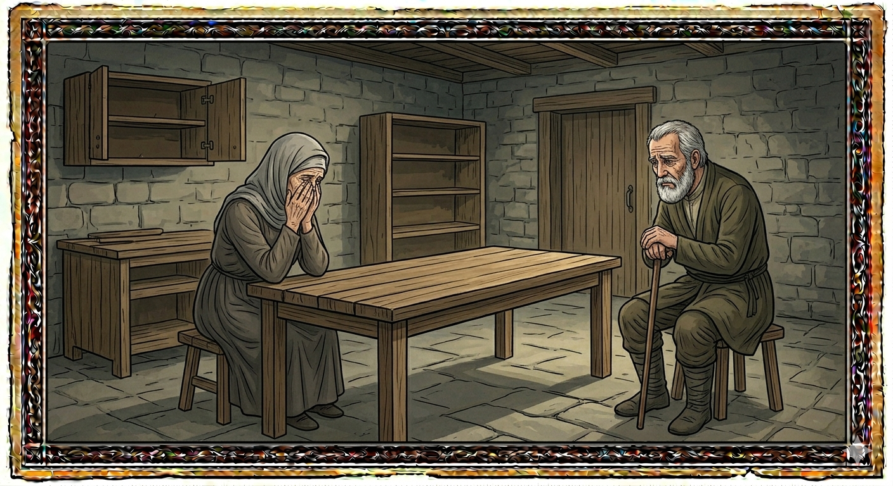

И.А. Дахкильгов. Хьехаме дувцарш - поучительные рассказы-притчи.
И.А. Дахкильгов. Хьехаме дувцарш - поучительные рассказы-притчи. Из ингушского фольклора.

Эггар вогӀа дола ди
Мар венна хиннав цхьан йоккхача сага. Таьзета венача цун вошас аьннад: - Укхул вогӀа кхы ди ма доагӀалда хьона. - Укхул вогӀа а ди доагӀаш хул хьона, - аьннад йишас. Дукха ха яьлалехьа йоӀ кхелхай цу йоккхача сага. Юха а аьннад вошас: - Укхул вогӀа кхы ди ма доагӀалда хьона. - Укхул вогӀа а ди доагӀаш хул хьона, - юха а аьннад йишас. Кхы а цхьа ха яьннача гӀолла воӀ кхелха хиннав цу йоккхача сага. Хьалха санна юха а къамаьл хиннад йишийнеи вешийнеи юкъе. Тоъал ха яьннача гӀолла ше цхьакха йиса йиша фу деш я-те хьажа, аьнна, из йолча зерате эттав цун воша. ЦӀагӀа а коа гӀолла а хьал-Ӏо йодаш, отара кӀала хьожаш, геттара сагота хьайзай йоккха саг. - Фу хиннад? Ма чӀоагӀа корзагӀаяьнна хьувз хьо? - хаьттад вошас. - Ӏа дийца дола вогӀа ди тахан тӀаэттад сона, - аьннад йишас, - кхы мел ӀаьржагӀа ди доагӀаргда хьаьшийна шуна оттае цӀагӀа хӀама йоацаш хилча?
РУССКИЙ
Самый тяжкий день
Овдовела некая старуха - умер ее муж. Пришедший на похороны брат старухи, сказал ей: - Пусть не будет у тебя более тяжкого дня, чем сегодняшний. - Бывают и более тяжкие дни, - ответила старуха. Вскоре умерла ее дочь. Брат старухи и тут сказал: - Да не будет у тебя более тяжкого дня. Но старуха ответила, что бывают и более тяжкие дни. Прошло какое-то время, и у старухи умер ее единственный сын. И тут брат пожелал сестре не иметь более тяжкого дня. Старуха же вновь отвечала, что бывает и хуже. Прошло еще какое-то время, и брат навестил свою одинокую, старую сестру. Она засуетилась по дому, во дворе, стала шарить в кладовке, курятнике. - Чего это ты так засуетилась? - поинтересовался брат. - Более тяжкий день, о котором ты говорил, - это мой сегодняшний день, - ответила старуха и продолжила, - разве может быть более черный день в жизни человека, чем, когда он не может своему гостю накрыть стол!
ENGLISH
The hardest day
An old woman was widowed - her husband had died. Her brother, who had come to the funeral, said to her: 'May you never have a day more difficult than today.' 'There are days even more difficult than this,' replied the old woman. Soon afterwards, her daughter died. The old woman's brother said once more: 'May you never have a day more sorrowful than this.' But the old woman replied that there were days even more sorrowful. Some time passed, and the old woman's only son died. Once again, her brother wished his sister a day no more sorrowful than this. But the old woman replied once more that there were days even worse. Some more time passed, and the brother paid a visit to his lonely, elderly sister. She bustled about the house and the yard, rummaging through the storeroom and the henhouse. 'Why are you rushing about like that?' asked the brother. 'The harder day you spoke of is the day I'm having today,' replied the old woman, and continued, 'Can there be a darker day in a person's life than when they cannot set the table for their guest!'
НОХЧИЙН
ПОГОВОРКИ
Валарах ма кхера, къелах кхера. - Не бойся смерти (она неизбежна), а бойся бедности.ВоагӀача хьаьшийла юхьала хозагӀа хӀама дац, водача хана цун букъ беце. - Красивее лица пришедшего гостя может быть лишь спина гостя уходящего.Га йоаца саьрг хоада атта ба. - Легко переломить прутик, оторвавшийся от родного ствола.Дикан тӀа дӀавехе, хьай йиш еце, ца вахача а хӀама дац; вон тӀа хьо вехе, хьай йиш еце а ца водаш Ӏе йиш яц. - Пригласили на торжества – не ходи, если не можешь; сообщили о беде – иди, даже если и не можешь.Дикача фусамнанна пхьор а дика чам болаш хул. - У хорошей хозяйки и ужин вкусен.Къавалар – валар, къе хилар – шозза валар. - Постарел – считай умер, обеднел – умер дважды.Къухьигашца йоккха цӀи ювзаргъяц. - Кизяками большой огонь не разжечь.Мегаргвола хьаьша пхьерий тӀа нийсалу. - Хороший гость приходит прямо к ужину.МоцагӀа, ворхӀ воша волашехьа а дийкъад цхьанне дакъа. - Случалось, что долю некоего человека люди поделили (отобрали), хотя у него и было семеро братьев.Сигала морх йоацаш, догӀа делхарг ма дац; дега тӀа бала боацаш, бӀарг белхарг ма бац. - Без туч на небе дождь не пойдет, без горя на сердце слезы не польются.ТӀехьа пандар боацаш, илли а оалалац; тохаш тӀоараш доацаш халха а воалалац. - Без гармошки песня не поется, без прихлопа не танцуется.ХьоашалгӀа иха воацачоа лерттӀа хьаьша тӀаэца ховргдац. - Кто сам не бывал в гостях, тот не сумеет толком гостя принять.Ӏуйрана вена хьаьша гайнавац. - Утренние гости не задерживаются.